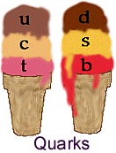

 Each of the quarks has a different "flavor," which is just the term physicists use to distinguish between the six types of quarks. For instance, the flavor of an up quark is simply "up."
Charged weak interactions can change the flavor of a particle! And only charged weak interactions can do this. Weak interactions which involve the neutral Z particle cannot change a particle's flavor.
Leptons also have a "flavor." In addition, they have electron number, muon number, and tau number, as discussed earlier. While lepton flavor is changed by weak interactions, the process conserved electron, muon, and tau numbers.